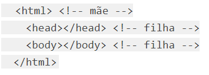
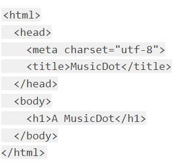
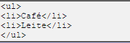
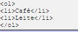

O computador é um equipamento que a maioria das pessoas utiliza. Seja para trabalho ou lazer, ele está presente em grande parte das residências e dos estabelecimentos. No entanto, você conhece a sua trajetória? Então, continue a leitura para saber mais sobre a evolução dos computadores.
Não é de hoje que vemos a evolução dos computadores, desde o seu tamanho até mesmo outras características que vão se diferenciando entre si ao longo dos anos.
Hoje em dia, diversos aparelhos cabem nas nossas mãos e, independente de suas dimensões, oferecem-nos uma infinidade de benefícios.
O primeiro computador foi criado entre 1943 e 1946 e se chamava Eletronic Numerical Integrator and Computer — ENIAC. Para o seu desenvolvimento, foi investido cerca de 6 milhões de dólares e seu funcionamento dependia de uma série de fatores, como 200 mil watts de energia.
Imagem do ENIAC Fonte: Internet
Um fator de grande importância é a memória, algo que não tinha na época do ENIAC. Cerca de 10 anos depois, foi lançado o RAMAX 305, uma máquina de armazenamento em disco feito pela IBM. No começo, só empresas e certas instituições faziam uso de um computador e, com o passar do tempo, essa tecnologia seria acessada por todos.
Por volta de 1980, a IBM liderava o ramo da computação com o desenvolvimento do sistema operacional 86-DOS e a Microsoft começava a desenvolver suas ideias e ofereceu o seu próprio sistema operacional para a IBM. Ao fechar o acordo, Bill Gates comprou o 86-DOS 1.10 da IBM e o sistema operacional acabou sendo propriedade exclusiva da Microsoft.
A Microsoft acabou vendendo também o seu sistema operacional para outras empresas, garantindo assim a evolução dos computadores para as pessoas.
"Cliente" é um termo empregado em computação e representa uma entidade que consome os serviços de uma outra entidade servidora, em geral através do uso de uma rede de computadores numa arquitetura cliente-servidor.

Imagem de clientes Fonte: Internet
Fat client, ou cliente gordo em português, são computadores numa rede cliente-servidor que dispõem de recursos suficientes para realizar boa parte das tarefas de modo independente de um servidor.
Thin client, ou cliente magro em português, são computadores numa rede cliente-servidor que são totalmente dependentes de um servidor para realizar suas atividades. Podem ser inclusive diskless (sem disco rígido), o que os torna dependentes do servidor inclusive para carregar o sistema operacional.
O servidor, de forma simples, pode ser considerado uma espécie de computador, o qual contém um ou mais processadores potentes, que operam de forma semelhante às máquinas domésticas, permitindo processamento de dados e execução de soluções solicitadas pela pessoa usuária.

Imagem de um servidor Fonte: Internet
As diferenças são, principalmente, no campo da potência de cada uma delas: um servidor tem mais potência do que os nossos desktops e notebooks. As imagens difundidas de datacenters, muitas vezes, mostram uma série de servidores que se assemelham aos desktops que muitos ainda têm em casa. Por isso, não raro, muitas pessoas leigas associam esses dois elementos.
Os servidores surgiram diante da necessidade de ter computadores de rede para usos específicos, principalmente para oferecer serviços de forma centralizada. Dessa forma torna-se desnecessária, por exemplo, a instalação de uma ferramenta em cada máquina de uma empresa — basta que ela seja executado no servidor e os diversos computadores estejam conectados em rede com ele para que possam obter os resultados.
Alguns exemplos de uso de servidores podem ser:
Esse modelo permite a aplicação distribuída de tarefas e funções de trabalho entre clientes e o servidor, sendo uma das ideias centrais da computação de rede. Isso porque ela permite sistemas de roteamento e acesso centralizado das informações que circulam no local.
Trata-se, assim, de uma arquitetura de aplicação distribuída em módulos. O servidor se ocupa, nessa arquitetura, pela manutenção dos dados, enquanto o cliente obtém as informações e encaminha-as ao local de armazenamento.

Imagem de Clients-Servers Fonte: Internet
Outro termo comumente utilizado, quando falamos em servidores, diz respeito ao alojamento web. Isso está atrelado com a hospedagem de sites. Imagine se, por exemplo, toda pessoa que quisesse ter um site necessitasse ter o seu próprio servidor. Trabalhoso, não é?
Para sanar a questão, surge o conceito de alojamento web. Ou seja, uma empresa que oferece o serviço para que alguém possa hospedar seu site no local, evitando a confecção de servidor próprio.

Imagem dos planos para hospedagem de sites da Hostgator Fonte: https://visaoreal.com.br/os-4-melhores-servicos-de-hospedagem-de-site/
Um documento HTML válido precisa seguir obrigatoriamente a estrutura composta pelas tags html, head e body e a instrução !DOCTYPE. Esta estrutura está informada em uma documentação que descreve todos os detalhes do HTML, no caso as tags e atributos, e como os navegadores devem considerar e interpretar estas tags, esta documentação é chamada de "especificação do HTML", e através do que está declarado nela que é possível entender se um documento HTML válido. Um documento HTML inválido é carregado pelo navegador, porém em um "modo de compatibilidade"
Abaixo, vamos conhecer em detalhes cada uma das tags estruturais obrigatórias:
Na estrutura do nosso documento, antes de começar a colocar o conteúdo, inserimos uma tag html. Dentro dessa tag, é necessário declarar outras duas tags: head e body. Essas duas tags são "irmãs", pois estão no mesmo nível hierárquico em relação à sua tag "mãe", que é html.
Imagem da tag html Fonte: https://www.alura.com.br/apostila-html-css-javascript/03CA-a-spec-html#:~:text=Um%20documento%20HTML%20v%C3%A1lido%20precisa,DOCTYPE%3E%20.
A tag head contém informações sobre o documento HTML que são de interesse somente do navegador e para outros serviços da web, e não para as pessoas que vão acessar nosso site. São informações que não serão exibidas diretamente no navegador, também podemos considerar um local onde informamos os metadados sobre a página.
A especificação do HTML obriga a presença da tag de conteúdo title dentro da head, permitindo definir o título do documento, que poder ser visto na barra de título ou aba da janela do navegador. Caso contrário, a página não será um documento HTML válido.
A tag body contém o corpo de um documento HTML, que é exibido pelo navegador em sua janela, ou seja, todo o conteúdo visível do site. É necessário que o body tenha ao menos um elemento "filho", ou seja, uma ou mais tags HTML dentro dele.
Imagem da tag body Fonte: https://www.alura.com.br/apostila-html-css-javascript/03CA-a-spec-html#:~:text=Um%20documento%20HTML%20v%C3%A1lido%20precisa,DOCTYPE%3E%20.
O DOCTYPE não é uma tag HTML, mas uma instrução especial. Ela indica para o navegador qual versão do HTML deve ser utilizada para exibir a página. Quando não colocamos essa instrução a página é exibida numa espécie de "modo de compatibilidade" na qual algumas tags e estilizações não funcionam 100% corretamente. Principalmente as tags e estilizações mais atuais (lançadas na versão 5 do HTML). Inclusive é possível ver a diferença na folha de estilos padrão que o navegador usa quando não colocamos essa instrução.
Uma lista não ordenada é uma lista de itens. As listas de itens são marcadas com bullets (tipicamente pequenos círculos pretos).
Uma lista não ordenada começa com a tag ul. Cada item da lista começa com a tag li.
Imagem de uma lista não ordenada Fonte: http://www.clem.ufba.br/tuts/html/c10.htm
Dentro de um item de uma lista você pode colocar parágrafos, quebras de linha, imagens, vínculos, outras listas, etc.
Uma lista ordenada é também uma lista de itens. As listas de itens são marcadas com números. Uma lista ordenada começa com a tag ol. Cada item da lista começa com a tag li.
Imagem de uma lista ordenada Fonte: http://www.clem.ufba.br/tuts/html/c10.htm
Dentro de um item de uma lista você pode colocar parágrafos, quebras de linha, imagens, vínculos, outras listas, etc.